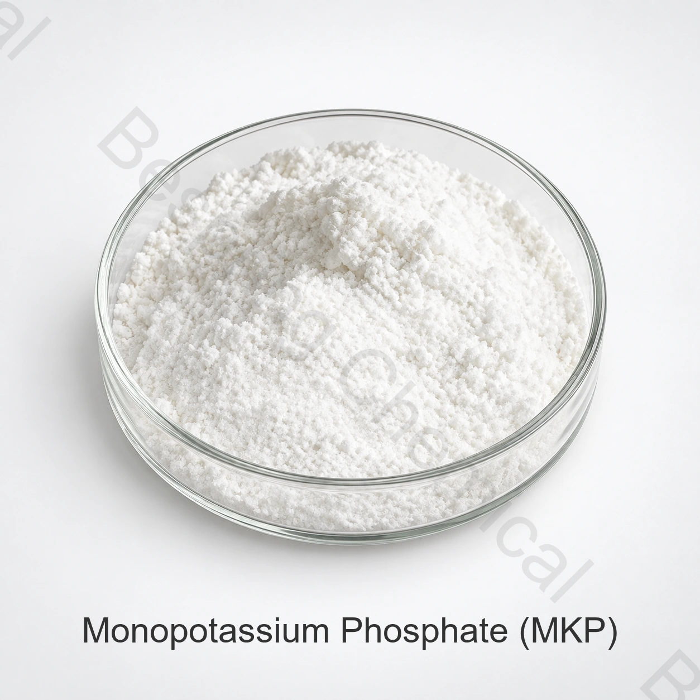

Puffersysteme
MKP kann Phosphatpufferung und Kalium in geeigneten Formulierungen beitragen, in denen das pH-Verhalten kontrolliert werden muss.
Lebensmittelqualität Phosphat · Kaliumsalz · CAS 7778-77-0
Monokaliumphosphat ist ein Orthophosphat, das in ausgewählten Lebensmittel- und Fermentationssystemen als Puffer, Kulturnährstoff, Hefekulturhilfsmittel, Backtriebkomponente und Fermentationshilfsmittel verwendet wird.

Produktbild · Qualität und Verpackung bei Bestellung bestätigen
Geben Sie an, dass Lebensmittelqualität erforderlich ist, und geben Sie den Antrag, die Spezifikation, die Menge, die Bestimmung und die Unterlagen an.
ReferenzanalyseKH2PO4 ≥ 98,0 % bezogen auf die Trockenmasse
Standardpackung25-kg-Sack
ContainerbeladungReferenz: 23 MT / 20' FCL
Überprüfung der LebensmittelqualitätCOA und entsprechende Zertifikate auf Anfrage
Produktprofil
Monokaliumphosphat in Lebensmittelqualität (MKP), auch Kaliumdihydrogenphosphat oder einbasiges Kaliumphosphat genannt, ist ein Orthophosphat mit der Formel KH2PO4 und CAS-Nummer 7778-77-0.
Die gelieferte Spezifikation besagt mindestens 98,0% KH2PO4 Lebensmittelkäufer sollten diese Qualität von Düngemitteln oder technischen Qualitäten unterscheiden und Identität, Verunreinigungen, Dokumentation und Anwendungsleistung in Betracht ziehen.
Anwendungsbereiche
In den vorliegenden Anwendungsleitlinien werden die Rolle der Kultur, der Würzstoffe, der Hefe, des Sauerteigs und der Fermentation genannt; die technische Eignung und der rechtliche Status müssen für die genaue Verwendung bestätigt werden.
MKP kann Phosphatpufferung und Kalium in geeigneten Formulierungen beitragen, in denen das pH-Verhalten kontrolliert werden muss.
Kann als Phosphat- und Kaliumquelle in qualifizierten Bakterienkulturen und Bioprozessmedien verwendet werden.
Bewertet in Hefeanbau- und Braukultursystemen als Teil eines kompletten Nährstoffprogramms.
Die gelieferte Anleitung identifiziert MKP in Prozessen, die zur Synthese oder Herstellung ausgewählter Würzstoffe verwendet werden.
Kann als Phosphatkomponente in ausgewählten Backtriebformulierungen bewertet werden, wobei das Reaktionsverhalten in der realen Rezeptur verifiziert wird.
Kann die Fermentation unterstützen, wenn Phosphat-, Kalium- und Pufferbedarf im Prozessmaßstab definiert und validiert werden.
Angegebene technische Daten
Die nachstehenden Werte sind kommerzielle Referenzgrenzwerte. Für die Bestellung gelten die vereinbarte Spezifikation, Prüfverfahren und chargenbezogenen Analysenergebnisse.
Horizontal scrollen oder die Tastatur verwenden, um alle Spalten zu lesen
| Testobjekt | Spezifikation |
|---|---|
| Monokaliumphosphat (KH)2PO4) Gehalt, Trockenmasse | ≥98.0% |
| Fluorid (F) | ≤0.001% |
| Schwermetalle (als Pb) | ≤0.001% |
| Glühverlust | ≤0.5% |
| Wasserunlösliche Substanz | ≤0.1% |
| Arsen (As) | ≤0.0003% |
| Cadmium (Cd) | ≤0.0001% |
| Quecksilber (Hg) | ≤0.0001% |
| Blei (Pb) | ≤0.0005% |
Notenangabe: "MKP" wird in Lebensmittel-, Fermentations-, Düngemittel- und technische Märkte verkauft. Erfordern Sie von den angebotenen Dokumenten die Angabe der anwendbaren Lebensmittelspezifikation und -quelle; genehmigen Sie eine Klasse nicht nur nach chemischer Bezeichnung.
Käuferqualifikation
Verbinden Sie die Rohstoffspezifikation mit der Medienleistung, den Anforderungen an Fertiggerichte und den Vorschriften des Zielmarktes.
Vor der Probenahme sind Produktbezeichnung, CAS, Formel, Lebensmittelqualität, Herkunft, Verpackung und Rückverfolgbarkeit zu überprüfen.
Bewerten Sie Auflösung, pH-Wert und Pufferung, Kulturwachstum oder Fermentationsreaktion, sensorische Auswirkungen und nachgeschaltete Kompatibilität.
Anforderungsspezifikation/TDS, SDS, COA- und einschlägige HACCP-, Kosher-, Halal- und ISO-Dokumentation für die angebotene Lieferung.
Lagerung und Handhabung
Fragen von Einkäufern
Ja. Monokaliumphosphat, Kaliumdihydrogenphosphat und einbasiges Kaliumphosphat sind Bezeichnungen für KH2PO4, CAS 7778-77-0.
Die chemische Identität kann dieselbe sein, aber die anwendbare Spezifikation, Verunreinigungen, Kontrollen, Dokumentation, Herstellungs- oder Verpackungsumfang und die regulatorische Eignung können unterschiedlich sein.
Die gelieferte Lebensmittelfolie enthält mindestens 98,0% KH2PO4 auf trockener Basis: Bestätigung der aktuell unterzeichneten Spezifikation und des COA für die Charge.
Die gelieferte Referenz beträgt 25 kg pro Beutel, 23 Tonnen pro 20-Fuß-Container und eine Mindestbestellung von 500 kg.
Geben Sie die Lebensmittelqualität, die vorgesehene Anwendung, die Zielspezifikation, die Menge, die Verpackung, den Bestimmungshafen, die erforderlichen Unterlagen und den gewünschten Liefertermin an.
Verwandte Kaliumphosphate
Metaphosphat mit unterschiedlicher Zusammensetzung und Lebensmittelverarbeitungsfunktionen.
Kondensiertes Phosphat für ausgewählte Emulgier-, Feuchtigkeits- und Sequestrierungssysteme.
Alkalisches Pyrophosphat für ausgewählte Anwendungen in der Lebensmittelverarbeitung.
Lieferung nach vereinbarter Spezifikation
Geben Sie die technischen und kommerziellen Details, die zur Überprüfung des Lebensmittelangebots erforderlich sind.
Diese Seiten behandeln verwandte Materialien für verschiedene Branchen. Qualität, Spezifikation und zulässige Verwendung richten sich nach der vorgesehenen Anwendung.
Nennen Sie Qualität und Zielmarkt, damit wir verfügbare Dokumente für Ihren Auftrag bestätigen können.
Eine externe Referenz ist kein Chargenzertifikat und keine Bespring-Produktspezifikation.